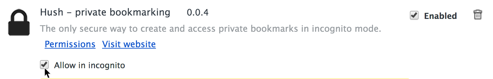
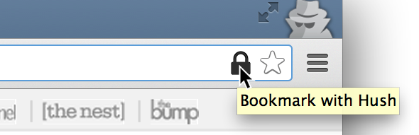
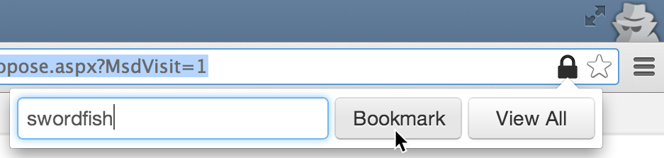
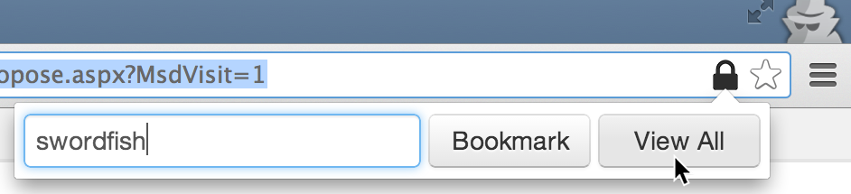
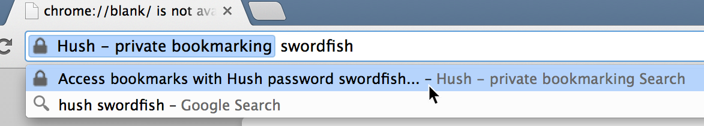
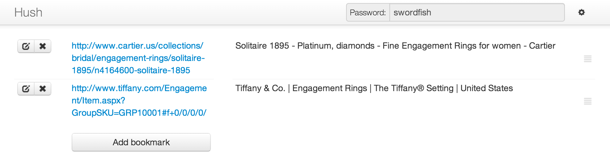
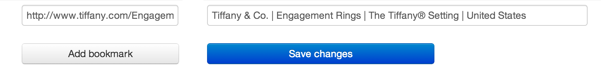
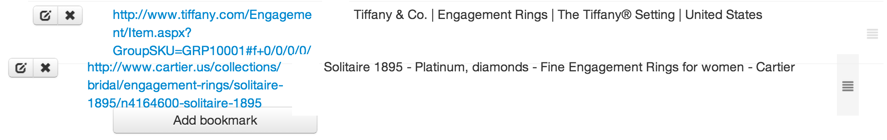
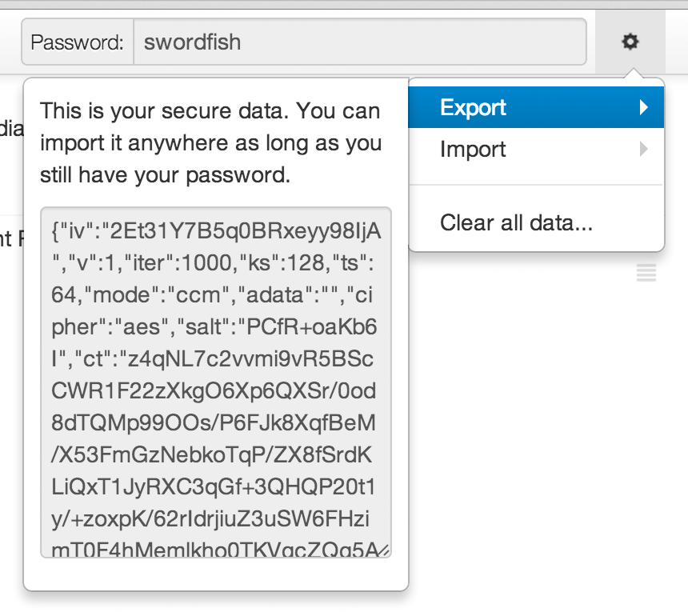
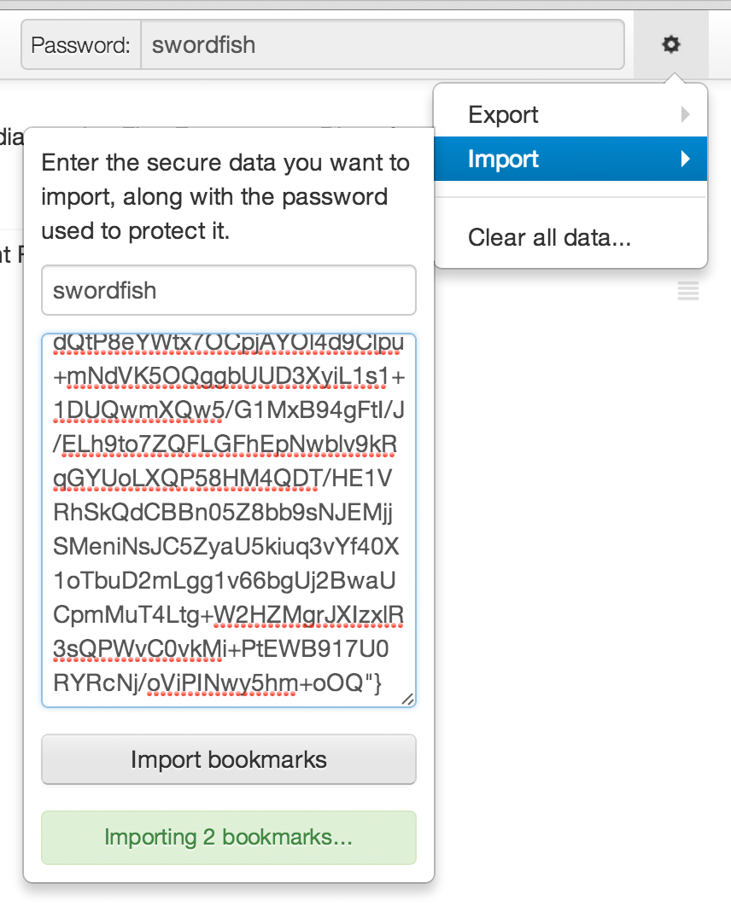

Here’s some information to get you started!
For your security, Hush only runs in incognito mode. You need to allow Hush to do so first!
Open your Chrome Extensions page.
For the Hush extension, click the “Allow in incognito” checkbox.

That's it! You're ready to use Hush!
Each set of bookmarks in Hush is secured by a password of your choosing. Ensure that your password isn’t easily guessable, but also make sure you remember it — if you forget your password, the set of bookmarks corresponding to it can never be recovered!
While you’re on the page you want to bookmark, click the Hush icon in the top right of the address bar.

This will display the Hush popup, which will prompt you for your password. Enter a password you want to use to protect this set of bookmarks, then click the Bookmark button.

Congratulations! You’ve saved a bookmark.
Click the Hush icon in the top right of the nav bar. Once you’ve entered the password associated with the set of bookmarks you want to access, click the View All button.

Your secure bookmarks panel will open up in a new tab.
In the address bar, type hush, followed by a space, and then the password associated with the set of bookmarks you wish to access. Then, press Enter.

Your secure bookmarks panel will open up in a new tab.
From your bookmarks panel, you can access all of your saved links easily.

Clicking the Edit button to the left of a bookmark allows you to edit the URL or description for a bookmark.

Clicking the Delete button to the left of a bookmark removes it altogether.
You can add bookmarks from this panel by clicking the Add bookmark button, then filling in the appropriate spaces.
You can also rearrange bookmarks by dragging them up and down using the handles on the right.

Once you’re done, don’t forget to save your changes!
Open the special menu by clicking on the on the top right of the page.
You can export an encrypted version of your bookmarks simply by copy-pasting the text in the Export dropdown. Don’t forget the password you used to save them, or else you won’t be able to decrypt them!

You can import encrypted bookmarks by entering their password and text in the Import dropdown.

Finally, you can delete all bookmarks by clicking the Clear all data... menu item. Watch out; this is unrecoverable!
If you have any further questions, suggestions, or comments, feel free to email us at teameuler@gmail.com or tweet us @TeamEuler!